Fix a missed clock-out or add time
In the office app, press Help and type fix a missed clock-out or add time
: the tour plays on your own screen, with your own data.
-
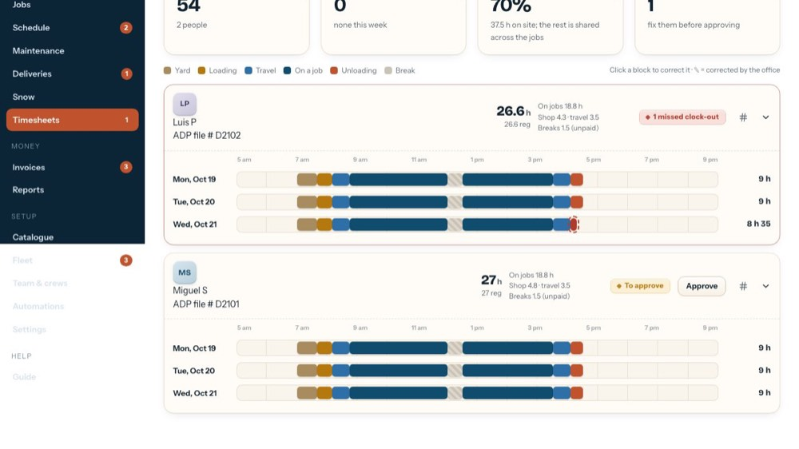
1A missed clock-out
Click the red dashed block.
-
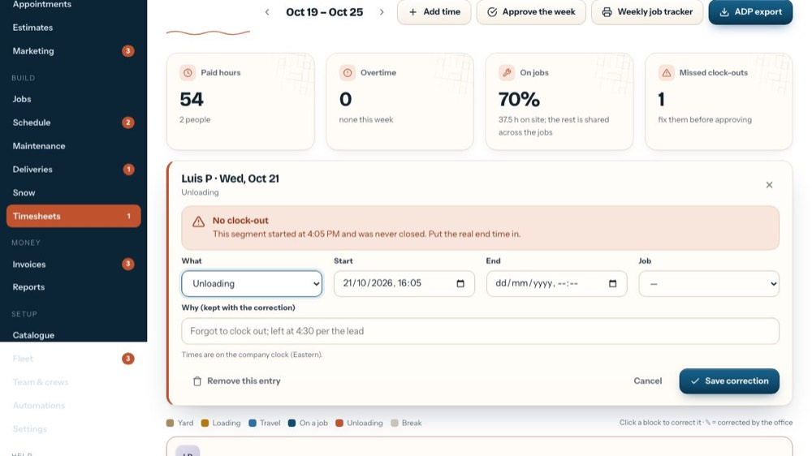
2No clock-out
It says when the block started and that it was never closed.
-
 3
3What
Yard, Loading, Travel, On a job, Unloading or Break.
-
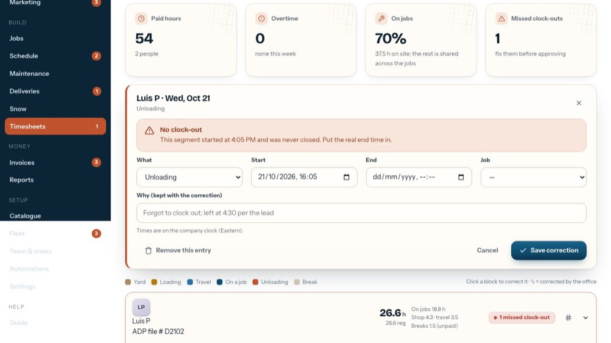
4Start
When it started, on the company clock (Eastern).
-
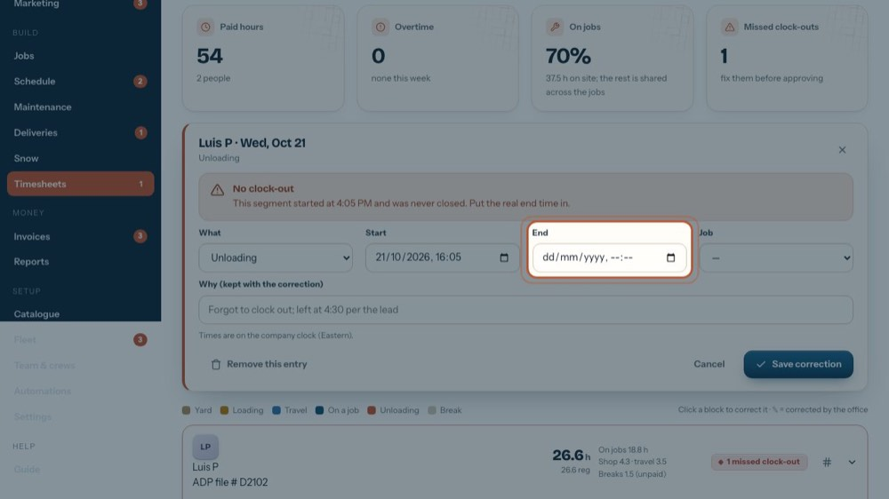
5End
When they really finished. For a block still running, leave it empty.
-
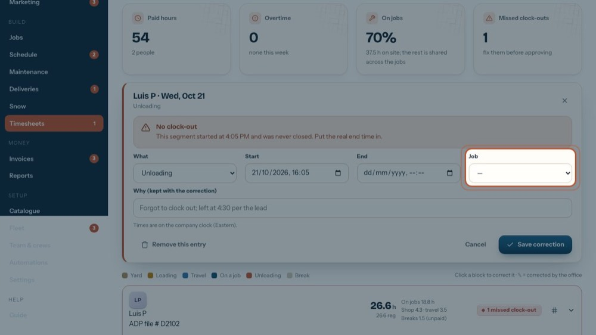
6Job
For On a job: which job. The hours go to that job's costing.
-
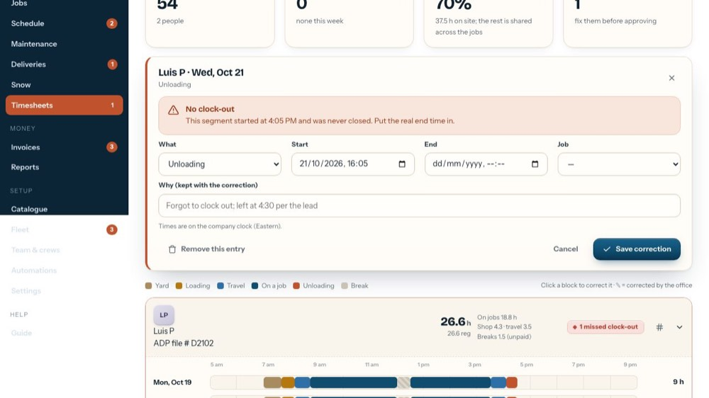
7Why
Why it changed, e.g. Forgot to clock out; left at 4:30 per the lead. The original times are kept too.
-
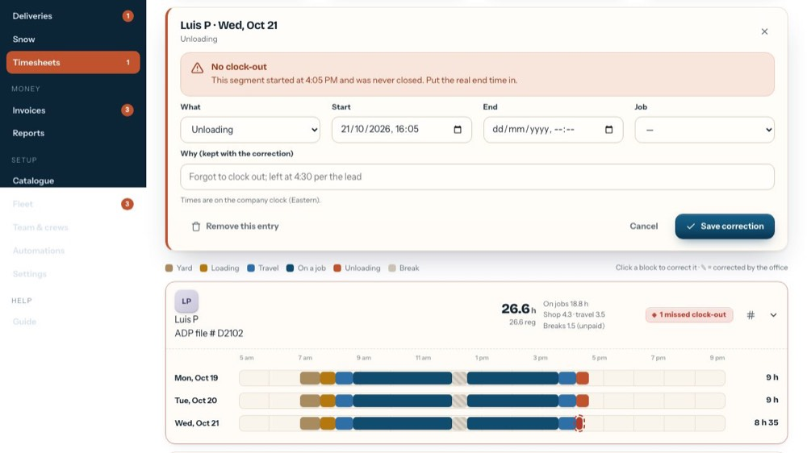
8Remove this entry
Takes the block off their week (it asks first).
-
 9
9Save the correction
Save correction marks it ✎. If the week was approved, approve it again. The tour doesn't press it.
-
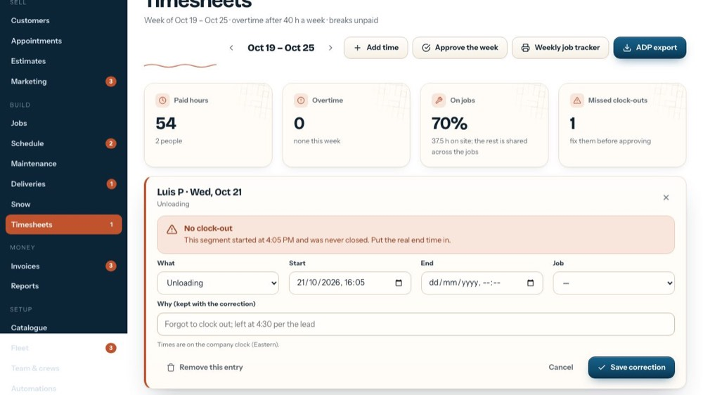
10Close the form
The x closes the form without saving anything.
-
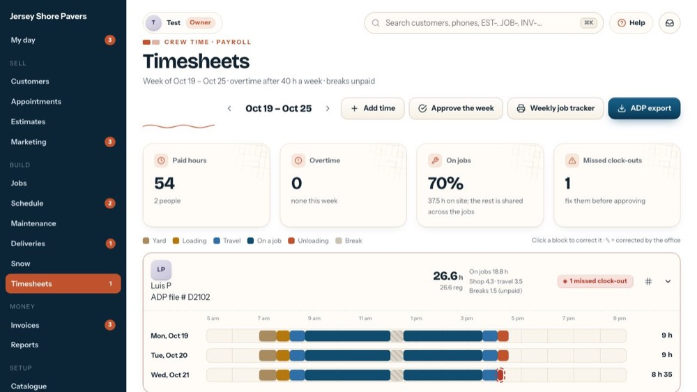
11Add time
For a forgotten punch or a paper timesheet.
-
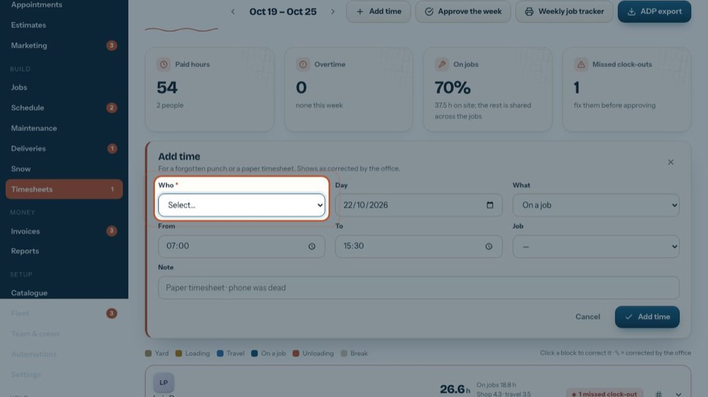
12Who
The person.
-
 13
13Day
The day.
-
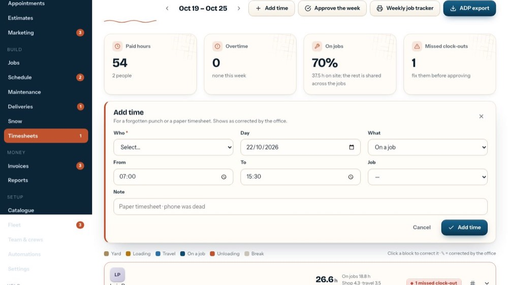
14What
Yard, Loading, Travel, On a job, Unloading or Break.
-
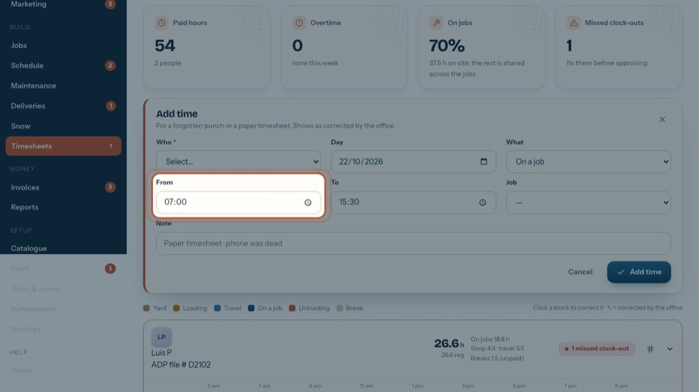
15From and to
The start and end times. Split a shift that runs past midnight.
-
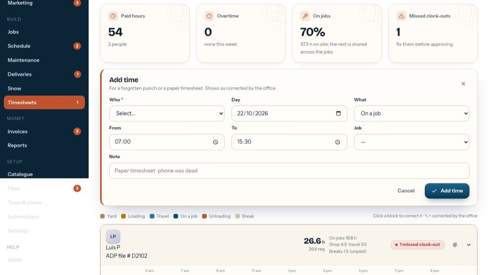
16Job
For On a job: which job.
-
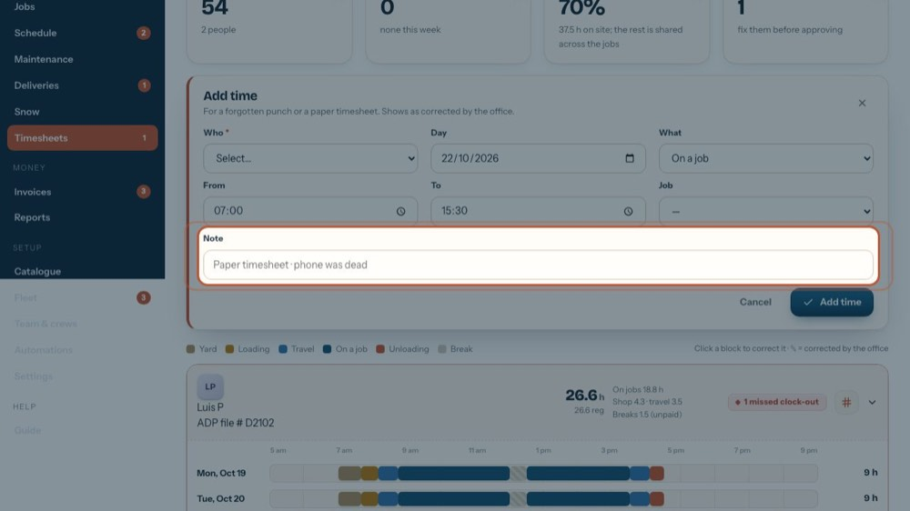
17Note
e.g. Paper timesheet · phone was dead.
-
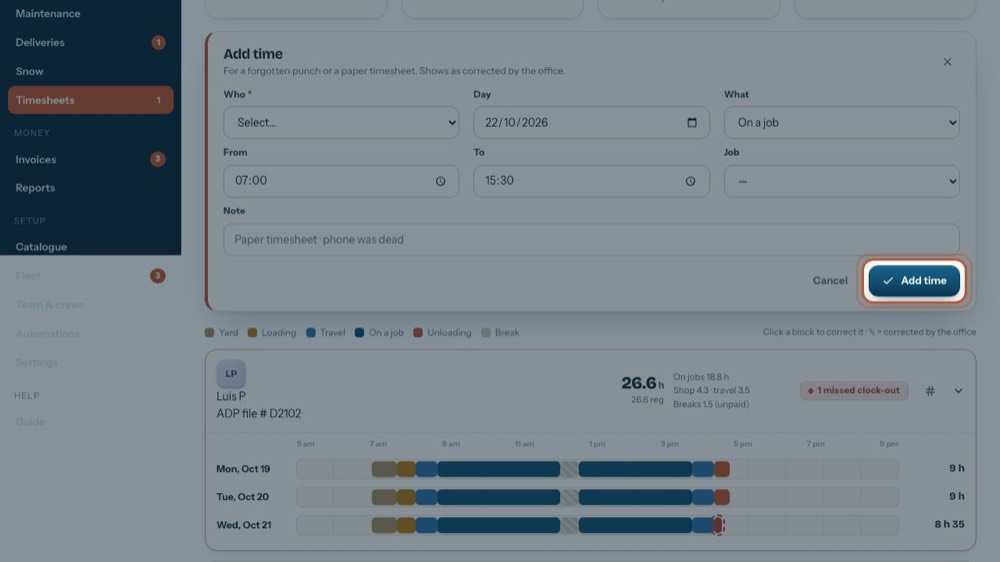
18Add it
Add time adds it, shown as corrected by the office. The tour doesn't press it.
-
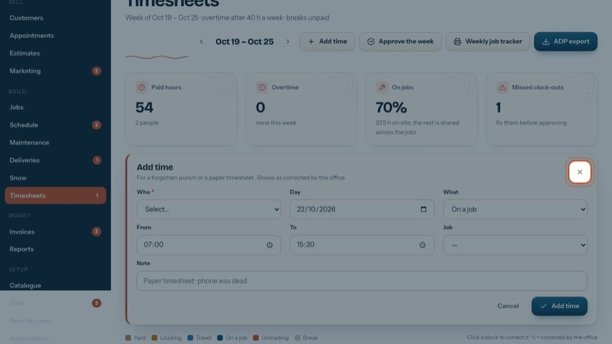
19Close the form
The x closes the form without saving anything.
-
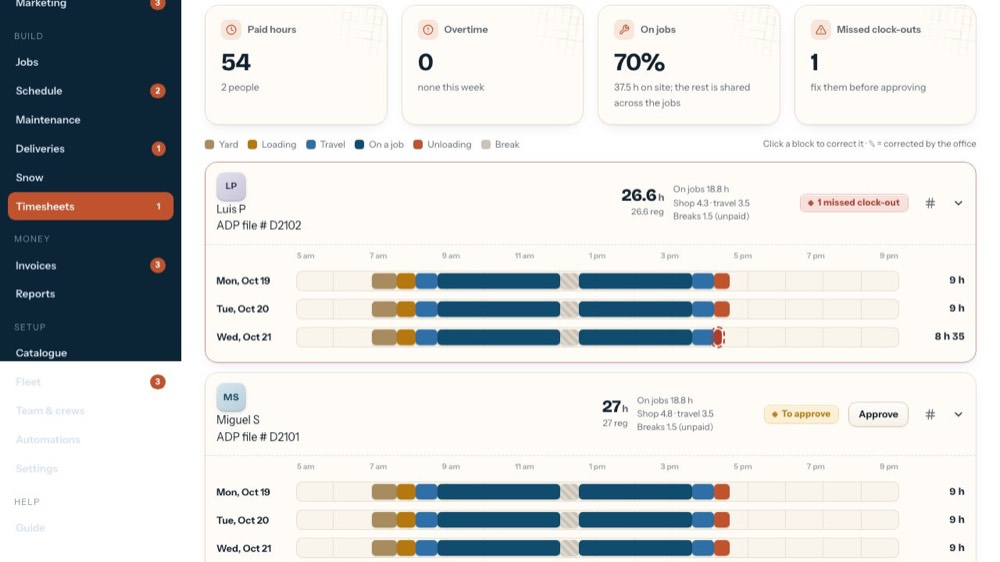
20Correct any block
Any block opens the same form: change what it was, its times or its job.